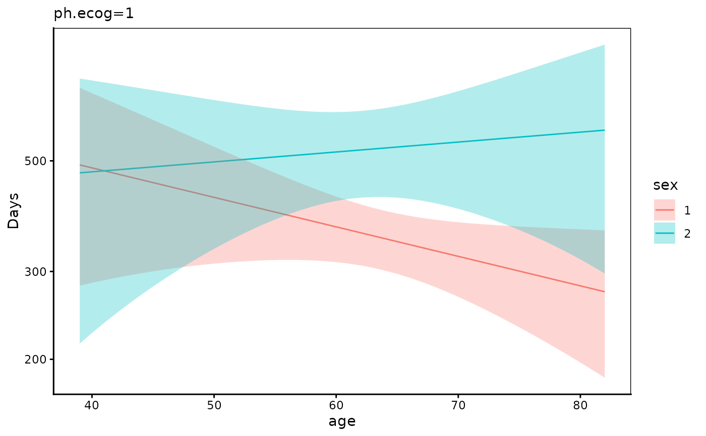
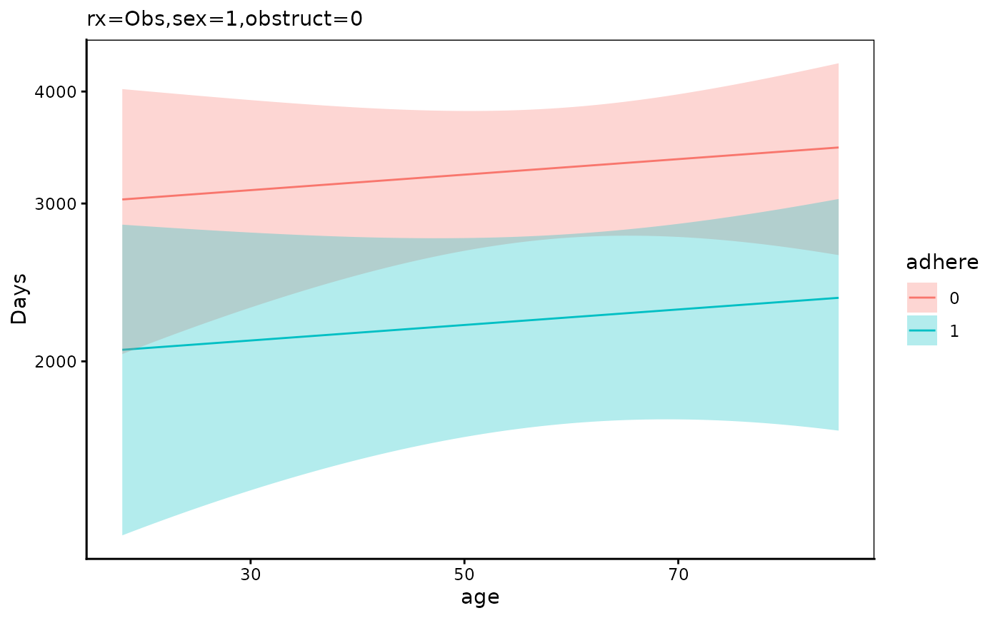
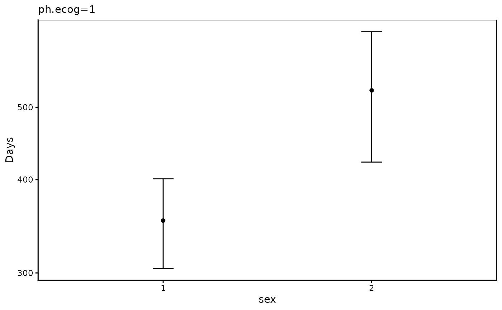
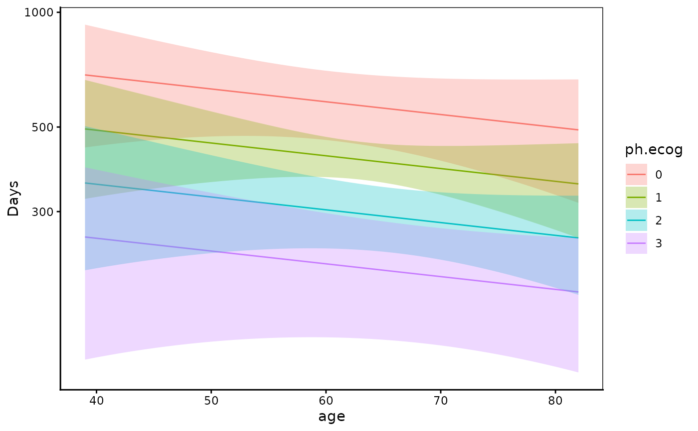
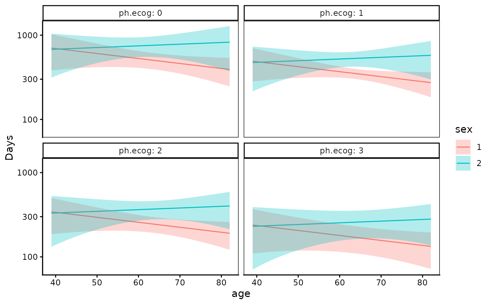
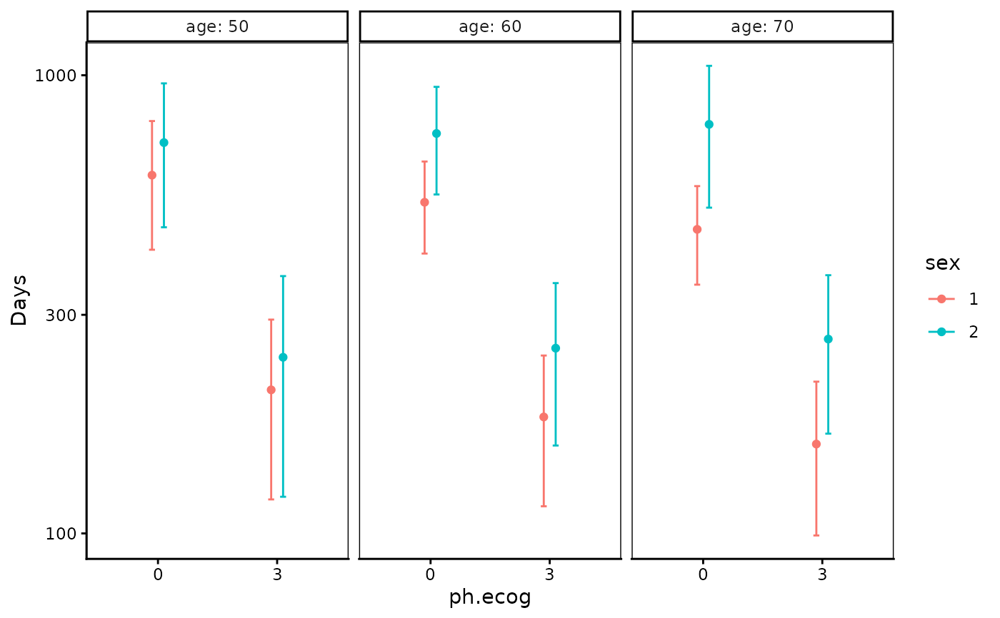
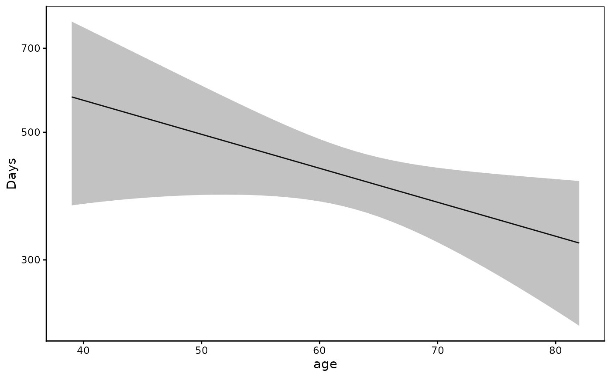

Show effects of covariates
Usage
showEffect(
fit,
x = NULL,
color = NULL,
facet = NULL,
autovar = TRUE,
pred.values = list(),
se = TRUE,
logy = TRUE,
collabel = label_both,
rowlabel = label_both
)Arguments
- fit
An object of class survreg
- x
character name of x-axis variable
- color
character name of color variable
- facet
character name of facet variable
- autovar
logical Whether or not select color and facet variable automatically
- pred.values
list list of values of predictor variables
- se
logical whether or not show se
- logy
logical WHether or not draw y-axis on log scale
- collabel
labeller for column
- rowlabel
labeller for row
Examples
library(survival)
library(ggplot2)
#>
#> Attaching package: ‘ggplot2’
#> The following object is masked from ‘package:crayon’:
#>
#> %+%
fit=survreg(Surv(time,status)~ph.ecog+sex*age,data=lung,dist="weibull")
showEffect(fit)

# \donttest{
fit=survreg(Surv(time,status)~rx+sex+age+obstruct+adhere,data=colon,dist="weibull")
showEffect(fit)
 showEffect(fit,rowlabel=label_value)
showEffect(fit,rowlabel=label_value)

fit=survreg(Surv(time,status)~ph.ecog+sex,data=lung,dist="weibull")
showEffect(fit)

fit=survreg(Surv(time,status)~ph.ecog+age,data=lung,dist="weibull")
showEffect(fit)

fit=survreg(Surv(time,status)~ph.ecog+sex*age,data=lung,dist="weibull")
showEffect(fit,x="age",color="sex",facet="ph.ecog")

showEffect(fit,pred.values=list(age=c(50,60,70),ph.ecog=c(0,3),sex=c(1,2)),
x="ph.ecog",color="sex",facet="age",autovar=FALSE)

fit=survreg(Surv(time,status)~age,data=lung,dist="weibull")
showEffect(fit)

# }